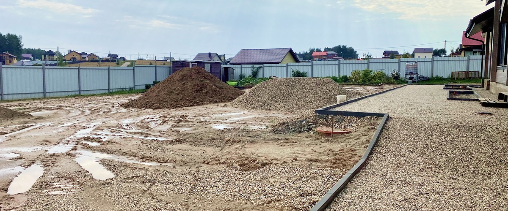
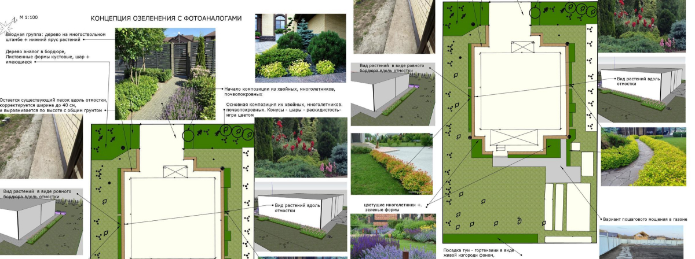
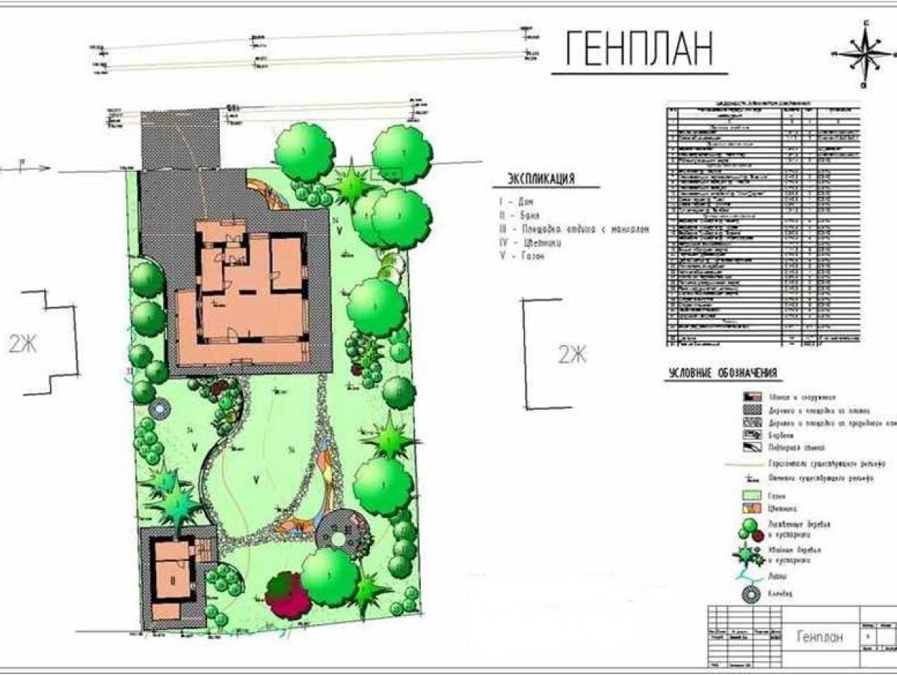
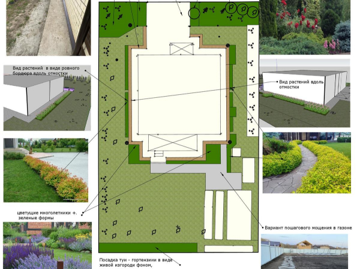
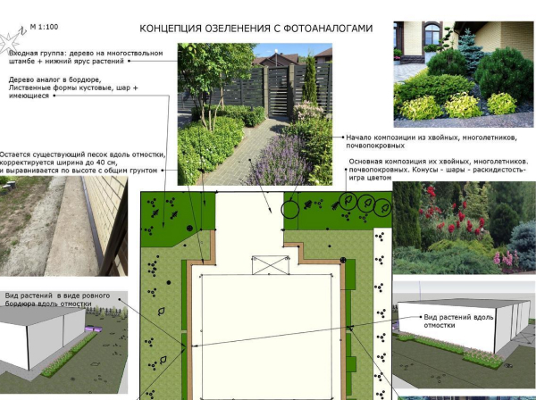

Этап заключения договора и создания эскизной концепции
01/
Выезд на объект
Дизайнер выезжает на объект, составляет ситуационный план, выполняет фотофиксацию. Проводит дополнительное интервьюирование заказчика, с возможным внесением дополнительной информации в его техническое задание.
Подписывается договор о сотрудничестве.
Возможно, выбирается «3D визуализация», по предварительному обсуждению.
02/
Наглядные примеры
Дизайнер размещает все необходимые объекты, в соответствии с нормами и дополнительными рекомендациями администрации поселка (по предоставленной информации от заказчика). Предлагает свое мнение по зонированию территории, размещению зон с растениями, площадками и т.д. - на основании технического задания заказчика и своего профессионального мнения.
Первоначально все это оформляется в виде набросков на планшете (SketchUp Layout).
В случае, если заказчик выбрал опцию «3D визуализация», то дизайнер, еще до предоставления информации заказчику, направляет вариант концепции визуализатору на отрисовку.
Продолжительность отрисовки концепции от 14 календарных дней.
В случае, если выбрано только стандартное предложение создания концепции (формат 2D вид сверху), то дизайнер предоставляет заказчику полученный результат - наброски, в формате фотографий.
Важно: дизайнер прорабатывает массу возможных вариантов, но заказчику предоставляет только один, наиболее успешный.
Однако, если площадь участка и условия позволяют равноценно удачно разместить зоныпо-другому, это будет обозначено.
Предоставляются отдельные наброски по каждой тематике концепции с пояснением в аудиофайле: экспликация (будущий генеральный план), видовые точки, план покрытий, концепция по растениям, основные размеры (ширина дорожек, отмосток, патио и т.д.), МАФ (малые аритектурные формы), референсы к зонированию (фотоаналоги).
Рекомендуется вынести на грунт основыне размеры для более детального понимания.
03/
Принятие решения
Заказчик берет паузу на просмотр материалов и предоставляет свое мнение.
В стоимость договора входит одна корректировка, именно поэтому мы так тщательно прорабатываем заранее техническое задание.
Корректоровкой не может быть добавление объектов. зон, которые не были учтены в техническом задании, т.к. это уже не корректировка, а создание новой концепции. Что может быть в корректировке; уменьшить/увеличить размеры, поменять местами.
На ваше новое предложение дизайнер даст свое профессиональное мнение, так как возможно, это будет худшим вариантом. Однако, окончательно принимает решение все же заказчик.
04/
Внесение корректировок
Дизайнер внесет корректировку в концепцию, с изменением следующих набросков: экспликация, основные размеры.
Направит на итоговое согласование.
05/
Генеральный план
Генеральный план — заключительный этап эскизной концепции сада. Генеральный план ландшафтного дизайна участка составляется, когда заказчик ознакомился и утвердил свое окончательное решение по организации нового пространства.
Он оформляется в электронный альбом, выполненный в программе SketchUp Layout и предоставляется заказчику в виде фотографий с возможностью печати с брошюровкой.
В альбом входят следующие страницы для брошюровки: экспликация (генеральный план), экспликация на разбивочной сетке (2 страницы), баланс террритории, референсы (фотоаналоги) к зонам.
А также, текстовые файлы: рекомендуемый порядок работ, стоимость некоторых позиций (МАФ, покрытий) на основании баланса территории ( детальная проработка возможна при дальнейшем обсуждении), акт приемки-передачи пакета документов.
Также, по запросу, дизайнер может предоставить файл с расширением .dwg, в котором отмечены все основыне линии концепции, для личных нужд.
Этап создания ландшафтной концепции закончен.
